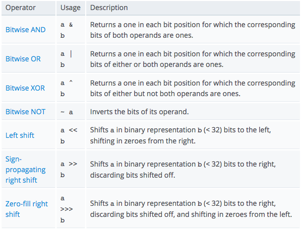
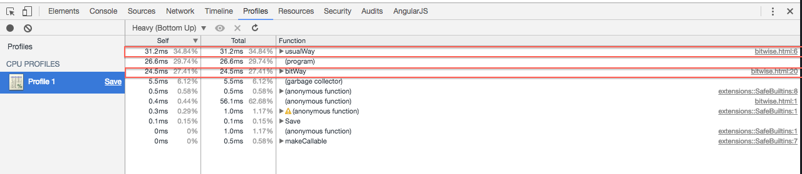

Bitwise operators treat their operands as a sequence of 32 bits (zeroes and ones), rather than as decimal, hexadecimal, or octal numbers. — developer.mozilla.org
It seems to me developer don’t bother to learn about bitwise operators. They have been left alone!
They are mostly not used because some feel that all developers don’t know them well and confuse them for their boolean equivalents. Like assume you are working on a big project and and you used something like (a & b), there is a very good probability that during code review someone would say that you missed an “&”, and it should have been “(a && b)”
These are the kind of reason why they are left alone. And they feel bad, they have feelings too you know!
So what if they treat any number as a sequence of 32 bits, their prejudice makes them very fast :P Seriously!!! Number in JavaScript are stored in IEEE-754 64-bit format. For Bitwise operations these are converted to 32 bit signed representation. Despite this conversion taking place, it is assumed that bitwise operations are very fast. Before we get into bitwise operations, lets look at how to see a number in binary? The Number.prototype.toString method takes radix(Optional)which is an integer between 2 and 36 specifying the base to use for representing numeric values. We can use the toString(2) method. Notice that we are passing an argument 2, which basically means return string in binary.
//See number in binary
var a = 2;
a.toString(2); //this returns string "111"
basic description of the operations are as follows:
So I decided lets put it to a simple test myself. It is common to see a row altering style for tables, where we give separate style for odd/even. The only difference in the below code is instead of “i % 2”, I have changed it to “i & 1”
//row alternating example
//Normal way
function usualWay() {
var evenUsual = 0;
var oddUsual = 0;
for (var i=0, len=10000000; i < len; i++) {
if (i % 2) {
//"odd"
oddUsual++;
} else {
//"even";
evenUsual++;
}
}
}
function bitWay() {
var evenBit = 0;
var oddBit = 0;
for (var i=0, len=10000000; i < len; i++) {
if (i & 1) {
//"odd"
oddBit++;
} else {
//"even"
evenBit++;
}
}
}
usualWay();
bitWay();
the outcome of this was bitwise was performing much faster for very larger inputs(iterations), but as the number of iterations came down the difference was very little and it does make you think, is it worth it?
I would personally not use it unless I am running that operation thousands of times. Since some of the operations are not very intuitive to read and maintain.